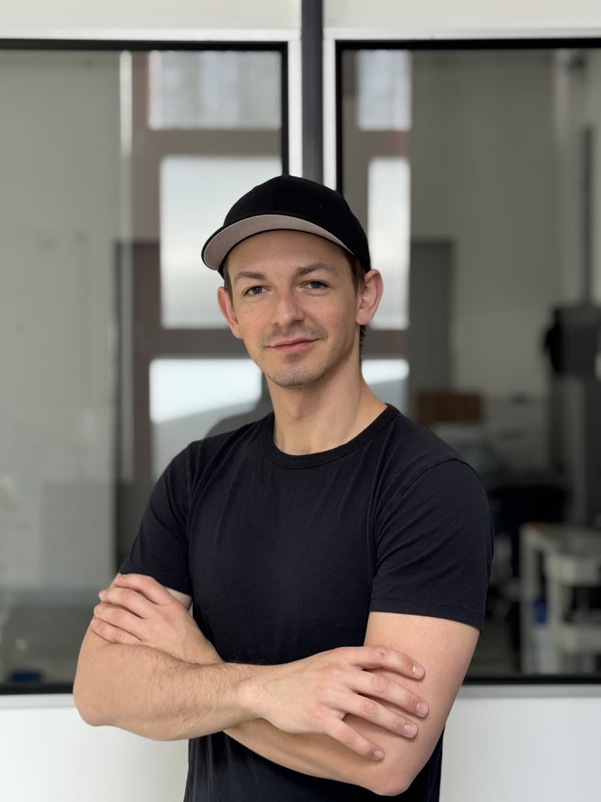
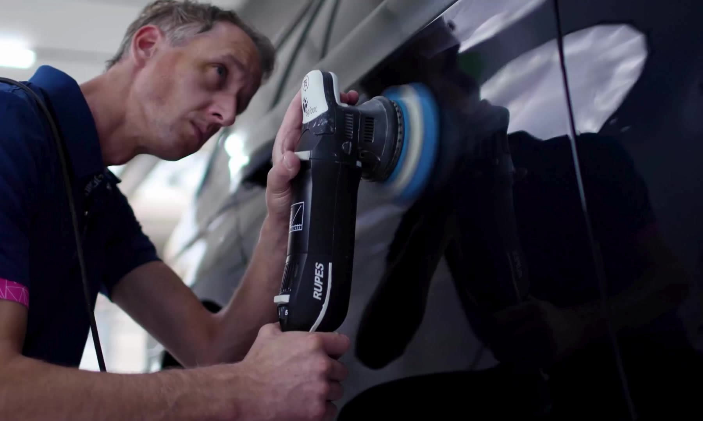

Das Studio.
Prime Studio ist kein Titel, den man kauft. Es ist ein Standard, den man hält. Geschult, auditiert und zertifiziert von GYEON.
Termin anfragen →Janetzke Car Detailing.

Seit 2023 betreibe ich in Pforzheim mein eigenes Detailing-Studio mit einem klaren Anspruch: Exklusive Fahrzeuge nicht nur zu pflegen, sondern wirklich besser zu machen.
In meiner gesamten Laufbahn als Detailer habe ich Fahrzeuge im Gesamtwert von über 20 Millionen Euro poliert, versiegelt und foliert. Die meisten davon waren Porsche und Mercedes-AMG. Dazu kamen absolute Sammlerstücke wie der Ferrari Enzo oder der LaFerrari. Autos, die man sonst nur hinter verschlossenen Türen sieht.
Was mich auszeichnet, ist nicht die Menge an Autos, die ich bearbeite, sondern wie ich arbeite: präzise Arbeitsschritte, ohne Abkürzungen und ohne Kompromisse. Besonders meine Erfahrung mit PPF-Lackschutzfolien und hochwertigen Keramikversiegelungen macht den Unterschied. Die Resultate sprechen für sich.
Daniel Janetzke · Inhaber
Was die Zertifizierung bedeutet.
Der Prime-Studio-Status ist eine Auszeichnung, die GYEON nur an ausgewählte Detailing-Betriebe vergibt. Er wird nicht beantragt, sondern verliehen: nach Schulung, Praxisprüfung und Audit der Arbeitsräume und Prozesse.
Für Sie heißt das: Applikation nach Herstellerstandard, Zugriff auf Produktlinien, die nur zertifizierte Studios verarbeiten dürfen, und herstellergestützte Garantien auf die Versiegelung.

So arbeiten wir.
-
Ein Fahrzeug nach dem anderen
Keine Fließbandaufbereitung. Jedes Fahrzeug bekommt die Zeit, die es braucht.
-
Nach Termin, ohne Laufkundschaft
Das Studio arbeitet ruhig und planbar. Besichtigung und Übergabe nach Vereinbarung.
-
Dokumentierte Prozesse
Lackanalyse, Arbeitsschritte und Übergabe werden protokolliert. Nachvollziehbar, auch Jahre später.
-
Beratung, die auch Nein sagt
Wir verkaufen nichts, was nicht zu Ihrem Alltag passt. Nachzulesen im Ratgeber.
Warum „Studio" wörtlich gemeint ist.
-
Prüflicht
Speziallicht von Scangrip macht jeden Kratzer und Swirl im Lack sichtbar, vor, während und nach der Arbeit.
-
Staubarme Zonen
Applikation in sauberer Umgebung. Staub ist der Feind jeder Versiegelung und Folierung.
-
Kontrollierte Aushärtung
Temperatur und Standzeit werden eingehalten, nicht abgekürzt. Das entscheidet über die Haltbarkeit.
-
Messtechnik
Schichtdickenmessung vor jeder Politur: Poliert wird auf Basis von Daten, nicht nach Gefühl.
Sehen Sie selbst.
Machen Sie sich ein Bild vom Studio, bevor Sie Ihr Fahrzeug abgeben. Besichtigung nach Vereinbarung.